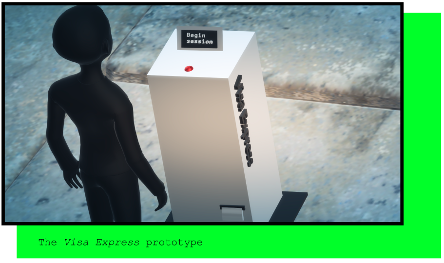
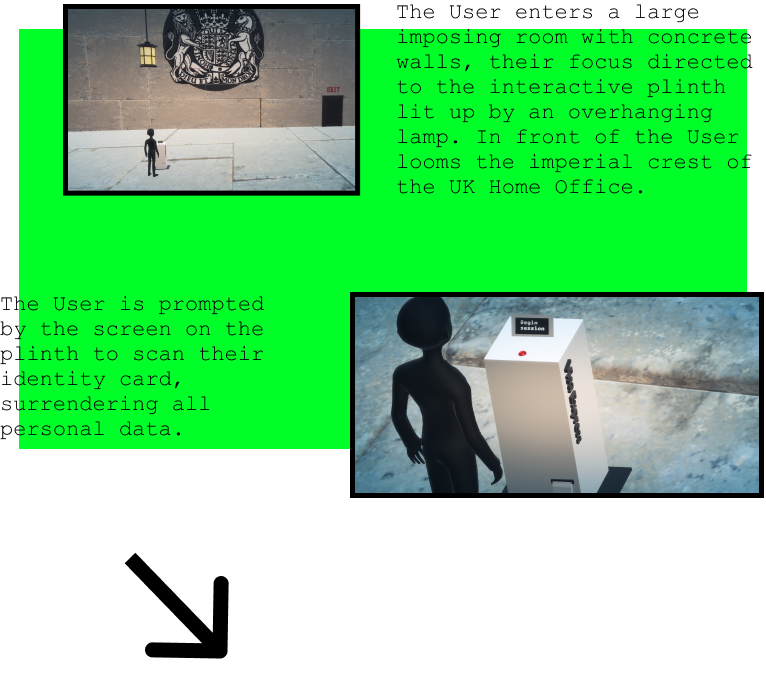

Visa Express:
Concept

The Visa Express is the outcome of design-based research and explores the use of automation and surveillance technologies within migration and freedom of movement processes through a critical design concept.
The Visa Express leads the user into a parallel reality where migration processes have been made entirely devoid of human contact and machines exact judgement on matters of freedom of movement, based on accumulation of personal data.
The user experience of Visa Express is aimed at making the user critically reflect on the potentially negative aspects of the current trend of automation and surveillance within migration processes.
